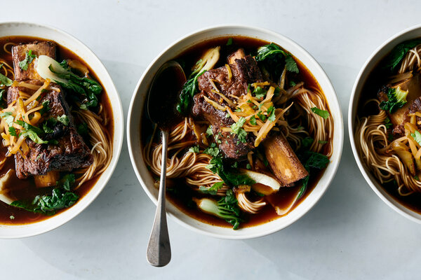

Taiwanese Beef Noodle Soup
J. Kenji Lopez-Alt
Flavored with warm spices, sugar and fermented broad bean chile paste,
Taiwanese beef noodle soup is traditionally made with gelatinous beef
shins and tendons, giving the broth a sticky richness. The flavors and
technique suit meaty short ribs, which come out meltingly tender and
moist. Adding a packet of powdered gelatin to the braising liquid gives
it the same lip-sticking richness that braised tendons offer in the
traditional version.

Ingredients
- 2 cups homemade or store-bought low-sodium chicken broth
- 1 cup Shaoxing wine
- 3 tablespoons Chinese dark soy sauce or shoyu
- 3 tablespoons dark brown sugar
-
1 tablespoon doubanjiang (Sichuanese fermented chile bean paste;
see Note)
-
1 (1/4-ounce) envelope unflavored powdered gelatin (about 2 1/2
teaspoons/7 grams)
Preparation
-
Step 1
Make the braising liquid: Combine chicken broth, wine, dark soy
sauce, sugar and doubanjiang in a medium bowl or large liquid
measure. Sprinkle gelatin over the top and set aside.
-
Step 2
Sear the beef: Season short ribs lightly with salt on all sides.
Heat oil in a large Dutch oven over high until shimmering. Working
in batches if necessary, add short ribs in a single layer and
cook, turning occasionally, until well browned on all sides, about
8 minutes, reducing heat if necessary if the oil smokes
excessively. Transfer short ribs to a large plate and set aside.
(Do not wash out the pot.)
-
Step 3
Add the aromatics: Add onion, tomatoes, garlic, ginger, scallions
and dried chiles to the pot, season lightly with salt, and cook,
stirring frequently, until the vegetables are starting to brown
around the edges and the tomatoes are breaking down, about 4
minutes. Reduce heat if the bottom of the pot starts to blacken or
smoke excessively.
-
Step 4
Bloom the spices: Add cinnamon, star anise, fennel seeds,
coriander seeds, Sichuan peppercorns and black peppercorns, and
cook, stirring frequently, until aromatic, about 1 minute.
-
Step 5
Stir the braising liquid to get the sugar off the bottom. (The
hydrated gelatin will have formed a raft that will break up a
little when you stir. It’s OK if it’s not dissolved at this
point.) Pour the braising liquid into the pot, then scrape up any
browned bits from the bottom of the pot.
-
Step 1
Make the braising liquid: Combine chicken broth, wine, dark soy
sauce, sugar and doubanjiang in a medium bowl or large liquid
measure. Sprinkle gelatin over the top and set aside.
-
Step 2
Sear the beef: Season short ribs lightly with salt on all sides.
Heat oil in a large Dutch oven over high until shimmering. Working
in batches if necessary, add short ribs in a single layer and
cook, turning occasionally, until well browned on all sides, about
8 minutes, reducing heat if necessary if the oil smokes
excessively. Transfer short ribs to a large plate and set aside.
(Do not wash out the pot.)
-
Step 3
Add the aromatics: Add onion, tomatoes, garlic, ginger, scallions
and dried chiles to the pot, season lightly with salt, and cook,
stirring frequently, until the vegetables are starting to brown
around the edges and the tomatoes are breaking down, about 4
minutes. Reduce heat if the bottom of the pot starts to blacken or
smoke excessively.
-
Step 4
Bloom the spices: Add cinnamon, star anise, fennel seeds,
coriander seeds, Sichuan peppercorns and black peppercorns, and
cook, stirring frequently, until aromatic, about 1 minute.
-
Step 5
Stir the braising liquid to get the sugar off the bottom. (The
hydrated gelatin will have formed a raft that will break up a
little when you stir. It’s OK if it’s not dissolved at this
point.) Pour the braising liquid into the pot, then scrape up any
browned bits from the bottom of the pot.
-
Step 6
Return the short ribs to the pot and add enough water to barely
cover them (1 1/2 to 2 quarts). Add bay leaves, bring the liquid
to a boil, adjust heat to maintain a bare simmer, and cover the
pot with a lid, leaving it slightly cracked to allow steam to
escape.
-
Step 7
Cook until a toothpick or skewer inserted into the meaty part of
the largest short rib shows very little resistance but isn’t
falling apart, 2 to 2 1/2 hours. Using a spatula and tongs,
carefully transfer the short ribs to a plate. Strain the braising
liquid through a fine-mesh strainer into a fresh pot. Discard the
solids.
-
Step 8
Pick any stray spices or aromatics off the short ribs and discard.
Return the short ribs to the braising liquid. For best results,
allow short ribs to cool in the liquid on the countertop, then
refrigerate overnight. Once liquid has chilled, using a ladle,
skin and discard most — but not all — of the fat from the surface.
-
Step 9
To serve: If you have the right number of ribs for each guest, you
can reheat them on the bone. If not, gently separate the meat from
the bone (including the tendons) and break the meat into big
chunks with your fingers before reheating. Bring broth and short
ribs to a simmer. Add vinegar and season broth to taste with salt.
Keep hot.
-
Step 10
Meanwhile, bring a large pot of salted water to a boil. Add greens
and cook until tender-crisp, about 1 minute. Remove greens with a
slotted spoon or tongs and set aside. Return water to a boil and
cook noodles according to package instructions. Drain noodles and
divide among four serving bowls. Top with short ribs, divide the
greens evenly among the bowls, and ladle the broth over the top.
Place a small pile of chopped Chinese pickled vegetable or
sauerkraut on top of each short rib, sprinkle with chopped
cilantro, and serve.